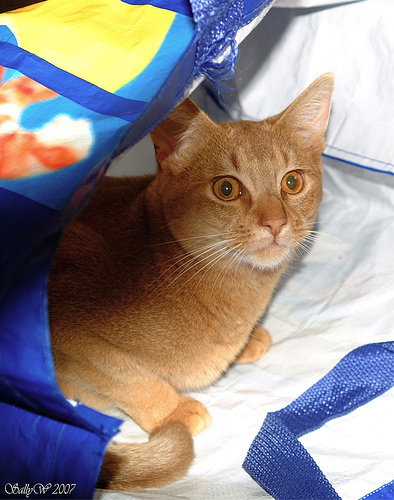
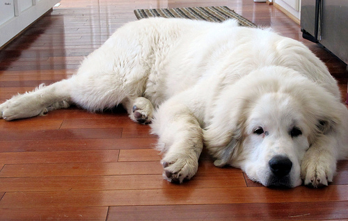

이미지자료분석 (1)– fastai로 이미지분석: 데이터저장, 학습, 기존데이터를 잘맞추는지 확인, 오답분석, 진짜 잘 맞추는게 맞을까?
강의영상
https://youtube.com/playlist?list=PLQqh36zP38-w4djJcMLe2Jgfuj5V14NPi
Import
데이터저장
# 탐색... 여러파일들이 있기는함..
# Abyssinian_1.jpg 를 보고싶다면?
PILImage.create('/home/cgb4/.fastai/data/oxford-iiit-pet/images/Abyssinian_1.jpg')
# Abyssinian_100.jpg 를 보고싶다면?
PILImage.create('/home/cgb4/.fastai/data/oxford-iiit-pet/images/Abyssinian_100.jpg')
- 그림을 확인 할 수 있는건 좋은데 이렇게 확인하니까 조금 귀찮음..
(#7390) [Path('/home/cgb4/.fastai/data/oxford-iiit-pet/images/miniature_pinscher_81.jpg'),Path('/home/cgb4/.fastai/data/oxford-iiit-pet/images/english_setter_78.jpg'),Path('/home/cgb4/.fastai/data/oxford-iiit-pet/images/chihuahua_156.jpg'),Path('/home/cgb4/.fastai/data/oxford-iiit-pet/images/english_cocker_spaniel_181.jpg'),Path('/home/cgb4/.fastai/data/oxford-iiit-pet/images/scottish_terrier_131.jpg'),Path('/home/cgb4/.fastai/data/oxford-iiit-pet/images/Bengal_188.jpg'),Path('/home/cgb4/.fastai/data/oxford-iiit-pet/images/yorkshire_terrier_101.jpg'),Path('/home/cgb4/.fastai/data/oxford-iiit-pet/images/British_Shorthair_41.jpg'),Path('/home/cgb4/.fastai/data/oxford-iiit-pet/images/great_pyrenees_49.jpg'),Path('/home/cgb4/.fastai/data/oxford-iiit-pet/images/wheaten_terrier_194.jpg')...]#PILImage.create('/root/.fastai/data/oxford-iiit-pet/images/english_setter_59.jpg')
PILImage.create(files[0])/home/cgb4/.fastai/data/oxford-iiit-pet/images/chihuahua_156.jpg/home/cgb4/.fastai/data/oxford-iiit-pet/images/english_cocker_spaniel_181.jpg/home/cgb4/.fastai/data/oxford-iiit-pet/images/scottish_terrier_131.jpg/home/cgb4/.fastai/data/oxford-iiit-pet/images/Bengal_188.jpg
/home/cgb4/.fastai/data/oxford-iiit-pet/images/yorkshire_terrier_101.jpg/home/cgb4/.fastai/data/oxford-iiit-pet/images/British_Shorthair_41.jpg/home/cgb4/.fastai/data/oxford-iiit-pet/images/great_pyrenees_49.jpg
학습
# 우리의 1차 목표: 이미지 -> 개/고양이 판단하는 모형을 채용하고, 그 모형에 데이터를 넣어서 학습하고, 그 모형의 결과를 판단하고 싶다. (즉 클래시파이어를 만든다는 소리)
# 우리의 2차 목표: 그 모형에 "새로운" 자료를 전달하여 이미지를 분류할 것이다. (즉 클래시파이어를 쓴다는 소리)
# cnn_learner 라는 함수를 이용해서 1차목표와 2차목표를 달성할 "썸띵(Object)"을 만들것임.
## 오브젝트란? 정보와 함수를 동시에 가지는 어떠한 집합체
# - 오브젝트.명사이름: 이것 통채로 하나의 변수처럼 쓸 수 있음.
# - 오브젝트.동사이름: 이것 통채로 하나의 함수처럼 쓸 수 있음. (이때 함수의 첫번째 입력은 명시하지 않아도 오브젝트 그 자체가 된다)
## clafr에 필요한 명사(=정보) <-- 우리가 넣어줘야하는 것들이 대부분
# (1) 모델정보: 클래시파이어로 누구를 뽑을것인가 (유명한 모델이 무엇인가? 잘 맞추는 모델이 무엇인가)
# (2) 데이터: 데이터를 줘야함
# (3) 평가기준표: 채점을 할 지표
## clafr에 필요한 동사(=함수) <-- 이미 구현이 되어있음..
# (1) 학습
# (2) 결과를 판단
# (3) 예측
clsfr = cnn_learner(dls,resnet34,metrics=error_rate)
# clsfr 라는 오브젝트를 만들건데..
# 그 오브젝트의 재료로 dls (데이터), resnet34 (데이터를 분석할 모형이름), metrics (모형의 성능을 평가할 기준) 를 넣음. /home/cgb4/anaconda3/envs/py37/lib/python3.7/site-packages/fastai/vision/learner.py:284: UserWarning: `cnn_learner` has been renamed to `vision_learner` -- please update your code
warn("`cnn_learner` has been renamed to `vision_learner` -- please update your code")
/home/cgb4/anaconda3/envs/py37/lib/python3.7/site-packages/torchvision/models/_utils.py:209: UserWarning: The parameter 'pretrained' is deprecated since 0.13 and will be removed in 0.15, please use 'weights' instead.
f"The parameter '{pretrained_param}' is deprecated since 0.13 and will be removed in 0.15, "
/home/cgb4/anaconda3/envs/py37/lib/python3.7/site-packages/torchvision/models/_utils.py:223: UserWarning: Arguments other than a weight enum or `None` for 'weights' are deprecated since 0.13 and will be removed in 0.15. The current behavior is equivalent to passing `weights=ResNet34_Weights.IMAGENET1K_V1`. You can also use `weights=ResNet34_Weights.DEFAULT` to get the most up-to-date weights.
warnings.warn(msg)기존 데이터를 잘 맞추는지 확인
오답분석
진짜 잘되는게 맞는건가?
('cat', TensorBase(0), TensorBase([1.0000e+00, 4.6123e-08]))clsfr.predict(PILImage.create('/home/cgb4/.fastai/data/oxford-iiit-pet/images/Egyptian_Mau_34.jpg'))('cat', TensorBase(0), TensorBase([1.0000e+00, 4.6123e-08]))('cat', TensorBase(0), TensorBase([1.0000e+00, 3.4750e-09]))('cat', TensorBase(0), TensorBase([1.0000e+00, 1.8037e-06]))('dog', TensorBase(1), TensorBase([1.7141e-07, 1.0000e+00]))('dog', TensorBase(1), TensorBase([1.3993e-10, 1.0000e+00]))숙제
- 인터넷에 존재하는 개 혹은 고양이 이미지를 임의로 하나 불러온뒤 clsfr에 넣어보고 결과를 관찰하라. 관찰결과를 스크린샷하여 제출하라.
- 숙제를 위한 예시코드
# https://dimg.donga.com/ugc/CDB/SHINDONGA/Article/5e/0d/9f/01/5e0d9f011a9ad2738de6.jpg <-- 인터넷의 이미지 주소
img=PILImage.create(requests.get('https://dimg.donga.com/ugc/CDB/SHINDONGA/Article/5e/0d/9f/01/5e0d9f011a9ad2738de6.jpg').content)
clsfr.predict(img)- 숙제 못하겠으면 카톡으로 물어보세요! 답 알려드립니다.
- 숙제는 간단하게 편한 형식으로 제출하세요. (저는 스크린샷 선호해요..) pdf나 hwp로 만드실 필요 없습니다.